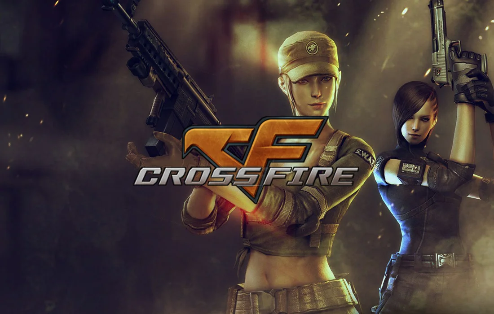
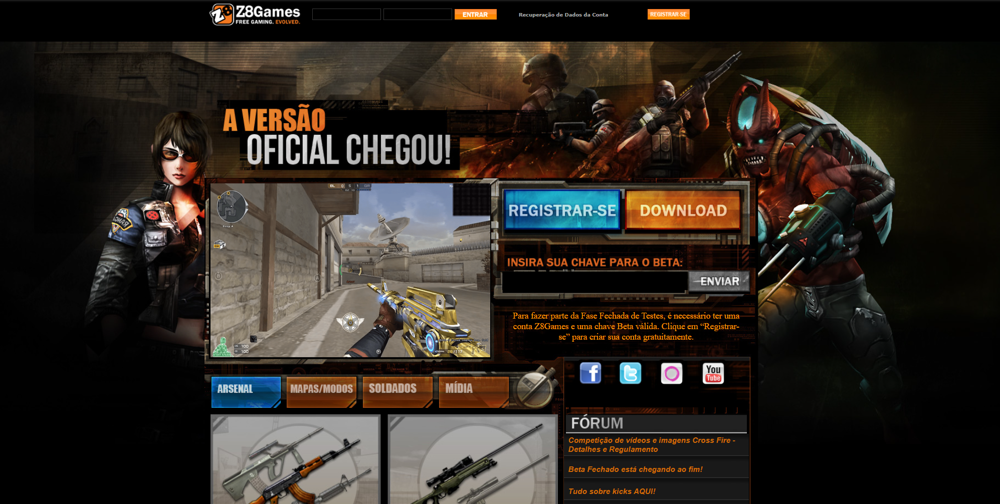
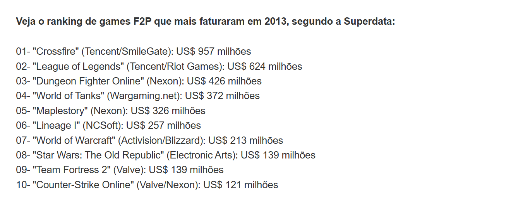
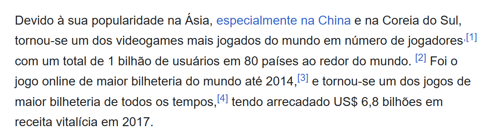

CrossFire foi um dos jogos de tiro online mais populares da década de 2010 e marcou profundamente uma geração de jogadores brasileiros.
Com partidas rápidas, dezenas de modos de jogo, armas lendárias e uma comunidade gigantesca, o FPS da Smilegate se tornou um verdadeiro fenômeno mundial.
CrossFire foi desenvolvido pela Smilegate, uma empresa da Coreia do Sul fundada em 2002. O jogo foi lançado oficialmente em maio de 2007 e colocava duas facções militares em conflito: Global Risk e Black List.
Desde o início, a proposta era criar um FPS gratuito e extremamente leve, capaz de rodar até mesmo em computadores simples encontrados em lan houses e cyber cafés.

Apesar de ter sido criado na Coreia do Sul, o principal mercado do jogo rapidamente se tornou a China. A Tencent lançou o jogo no país em 2008 e milhões de jogadores passaram a frequentar os servidores diariamente.
O sucesso foi tão grande que CrossFire se tornou um dos jogos mais lucrativos da história dos games.
CrossFire chegou oficialmente ao Brasil em 2011 através da Z8Games. Durante vários anos ele se tornou o FPS mais jogado do país, dominando lan houses e computadores domésticos.
Grande parte do sucesso veio da facilidade de instalação, dos requisitos baixos e da enorme quantidade de conteúdo disponível.

Mapas como Castelo, Egito e Navio ficaram eternizados na memória da comunidade brasileira.
Além disso, modos como Fantasma, Sombra, Super Soldado, Zumbi e Lâmina Mortal ajudaram a manter o jogo sempre divertido.
Por utilizar uma tecnologia antiga, CrossFire acumulou diversos bugs famosos. Era possível esconder a C4 em locais específicos, entrar dentro de caixas e utilizar técnicas como Bunny Hop, conhecido pelos brasileiros como "cavalar".
O famoso "pezinho" também permitia alcançar áreas normalmente inacessíveis dos mapas.
Em 2013, CrossFire arrecadou cerca de 957 milhões de dólares e se tornou o jogo mais lucrativo do mundo naquele período, superando gigantes como World of Warcraft e League of Legends.
Nessa mesma época nasceu o CrossFire Stars (CFS), campeonato mundial que reuniu as melhores equipes do planeta.

Entre as armas mais desejadas estavam a M4A1 Sakura, M14 Dragão Imperial, Kit Super Dragon e a lendária M4A1 Vitoriosa.
Ter uma arma rara era motivo de orgulho e frequentemente outros jogadores pediam para experimentá-la durante as partidas.
Entre 2011 e 2017, os hacks se tornaram um dos maiores problemas do jogo. Wall Hack, No Recoil, Speed Hack, Fly Hack e diversas outras trapaças passaram a dominar os servidores públicos.
Mesmo com sistemas anticheat e denúncias, a situação continuou sendo uma das principais reclamações da comunidade.
Com o passar dos anos, muitos jogadores abandonaram o jogo devido à presença constante de hackers e ao foco crescente em monetização.
Diversos servidores internacionais acabaram encerrando suas atividades, reduzindo ainda mais a presença global da franquia.
A Smilegate continuou expandindo o universo CrossFire através de jogos como CrossFire Legends, CrossFire HD, CrossFire Zero, CrossFire Legion e CrossFire X.
Rumores recentes também apontam para o possível desenvolvimento de um CrossFire 2.

CrossFire ajudou a definir uma geração de FPS online gratuitos. Durante anos dominou lan houses, reuniu amigos e proporcionou momentos inesquecíveis para milhões de jogadores brasileiros.
Mesmo após tantos anos, continua sendo lembrado como um dos jogos online mais importantes da era de ouro dos anos 2000 e 2010.